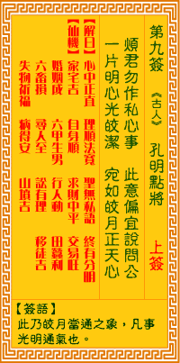

观音灵签第九签 【孔明点将】 |
 | |||
劳君问我心中事 此意偏宜说向公 一片灵台明似镜 恰如明月正当空 |
||||
| 【吉凶】 | 上上签 | 【宫位】 | 寅宫 | |
| 【签语】 | 此卦皎月当空之象，凡事光明通气也。 | |||
| 【解曰】 | 心中正直 理顺法宽 圣无私语 终有分明 | |||
| 【仙机】 | 此签家宅吉，自身顺，求财中平，交易旺，婚姻成，六甲生男，行人动，田蚕利，六畜损，寻人至，讼有理，移徙吉，失物祈福，病得安，山坟吉。 | |||
| 【详解】 | 辛苦你来问我心中疑虑的事，若能执中无私往这个道理最好;如果心里清澄如镜就能透澈事理，就好似天上皎洁的月亮照耀了整个夜空。 心中正直，理顺法宽，天无私意，莫空虚看。此签皎月当空之象，凡事正直则吉。 本签者皎月当空之象也。凡事正直则吉之签。虽是前运不佳。前事去之后。渐见顺利者。君尔幸获此签之示者。平素之存心种德之所由成。后得如此之佳境。亦即是心中正直。理顺法宽天无私意莫空虚看。 此签有”杂不如精”之意。提醒当事人，凡事融会贯通。大部分的人都觉得，能够学到的东西越多越好。因此寻求多才多艺，但对单一的技能却尚未领悟其精髓。 所谓”术业有专攻”，与其学得杂，不如学得精;一门功夫要练到炉火纯青，绝非短期内可促成。故事中赵韩王之所以能用半部论语定天下，即是因将所学施展到极致之故。因此不论做什么事、求什么学问，务必先扎稳根基、穷究其理;掌握诀窍之后，再经由不断地揣摩与练习，才能将所学发挥到淋漓尽致，并能举一反三，转变为本身特有且难以撼动的绝技。 | |||
| 【典故】 | 诸葛亮（孔明）被刘备请下山，被礼为军师。时夏侯享引兵攻打刘备，孔明随即调兵点将，准备迎战，但关公张飞都不服气。双方军队会战于博望坡，结果刘备军队大获全胜，证明了诸葛亮军事的高明策略，关张二人从此信服。 | |||